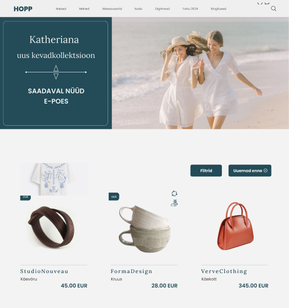
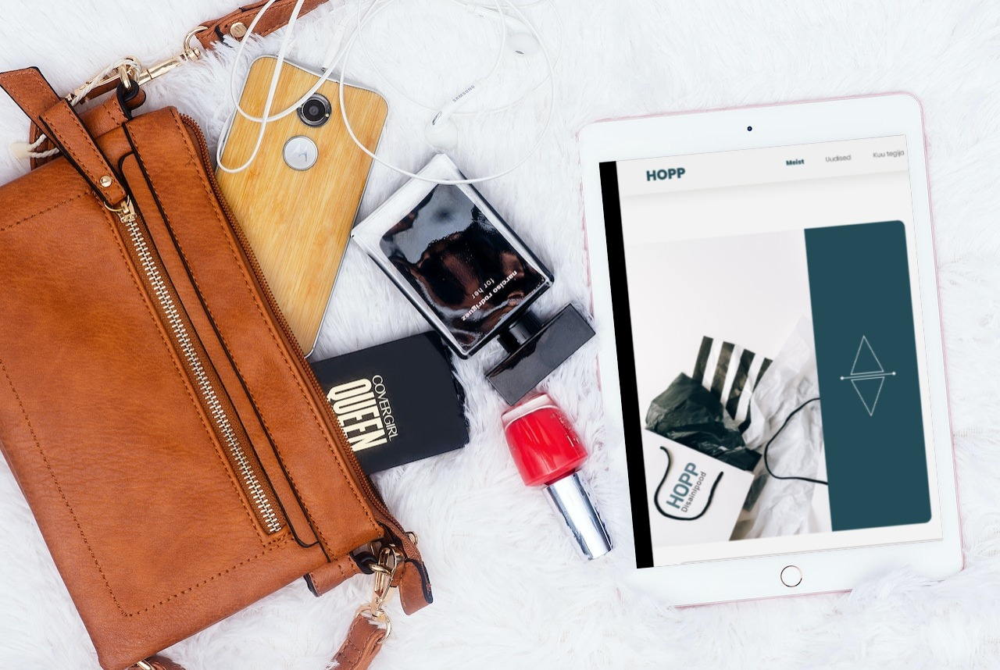
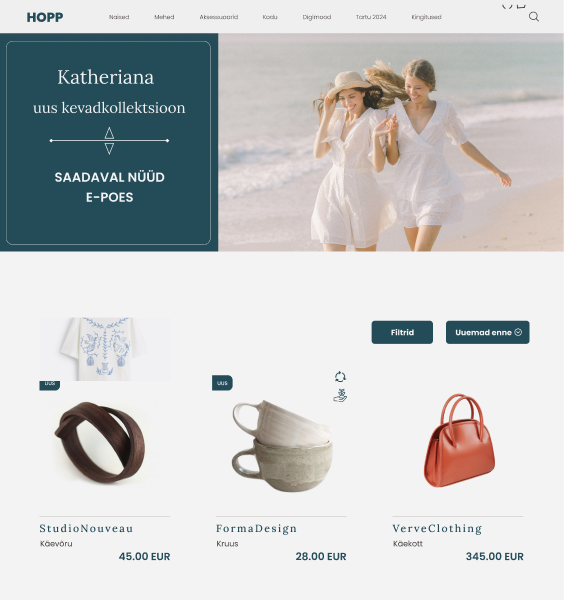
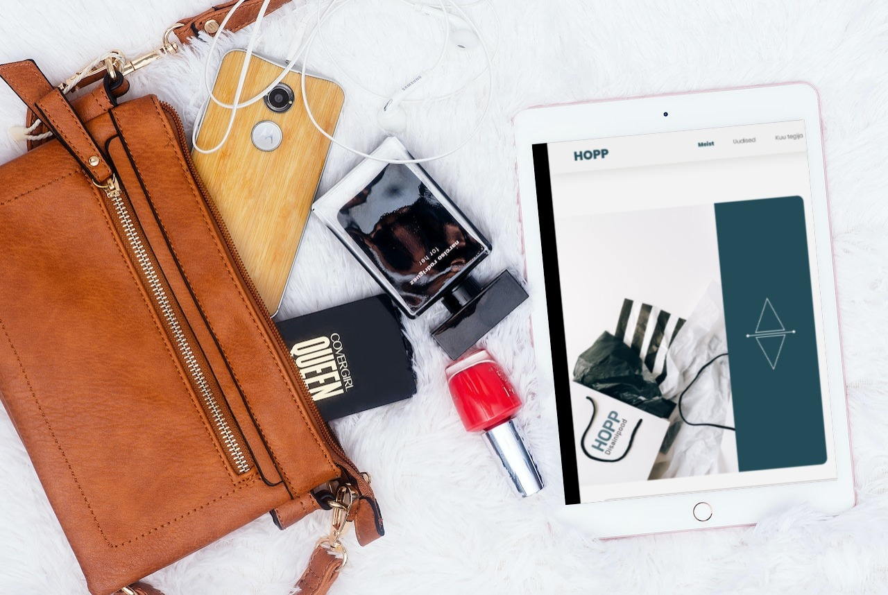

Praktiline Läbilõige: Ülesanded Esimese Aasta Praktikal
Esimeste sammudena süvenesin kodulehe ja e-poe kasutajaskonda puudutavatesse küsimustesse ning lisaks vestlesime tellijaga Loomemajanduskeskusest kui organisatsioonist, tema väärtustest ning visioonist. Kitsamalt tuli aruteluks disainipoe tulevikuplaanid, bränding ja olemus mis võiks peegelduda ka kodulehelt. Praktika käigus viisime meeskonnana läbi erinevaid uuringuid. Uurimismeetodite valikul lähtusin nende rakendatavusest ning sellest, kuidas need aitavad paremini mõista klientide vajadusi ja käitumist. Samuti süvenesin prototüüpimise erinevatesse etappidesse, hoides samas suhtlust tellijaga et tagada mõnus ja sujuv kaasatus kõigile osapooltele. Minu rolliks oli keskenduda Hopp disainipoes asuva kodulehe ja e-poe UX/UI kasutajamugavuse ja kasutajakogemuse analüüsile ning disainiprotsessile. Selle käigus teostasin erinevaid ülesandeid, mis võimaldasid nii suhtlust, analüüsi kui ka loovust.
Uuringu meetodid, mida praktikal kasutasin

 


